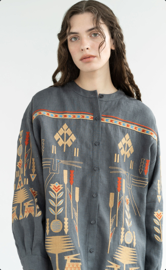

<section class="hero">
	<div class="container hero-container">
		<div class="hero-title-parth-zero">
			<div class="hero-title-parth-one">
				<div class="hero-title ">
					<h1 class="hero-text">
						Reviving the traditional
						<span class="title-span">Ukrainian</span> artistry in every stitch.
					</h1>
					<a class="title-button" href="#order">
						Order
						<svg class="icon-btn" width="26px" height="22px">
							<use href="./img/icons.svg#icon-arrow"></use>
						</svg>
					</a>
				</div>
				<picture class="hero-image">
					<source srcset="./img/hero/girl-1440.jpg 1x, ./img/hero/girldesk-2x.jpg 2x"
						media="(min-width:1280px)">
					<source srcset="./img/hero/girl-t.jpg 1x, ./img/hero/girltab-2x.jpg 2x" media="(min-width:768px)">
					<source srcset="./img/hero/girl-m.jpg 1x, ./img/hero/girlmob-2x.jpg 2x" media="(max-width:767px)">
					
				</picture>
			</div>
			<div class="hero-title-parth-two ">
				<div class="hero-star">
					
					<p class="hero-startext">all embroidery is made by hand</p>
				</div>
				<div class="small-ima">
					
				</div>
			</div>
		</div>
	</div>
</section>